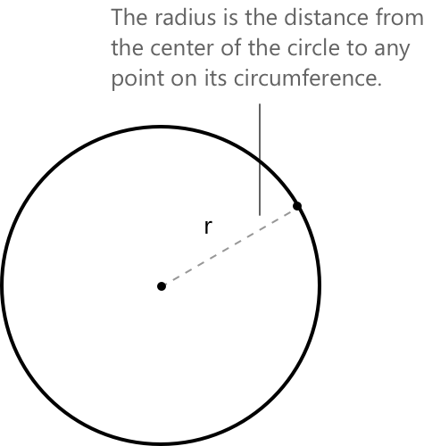
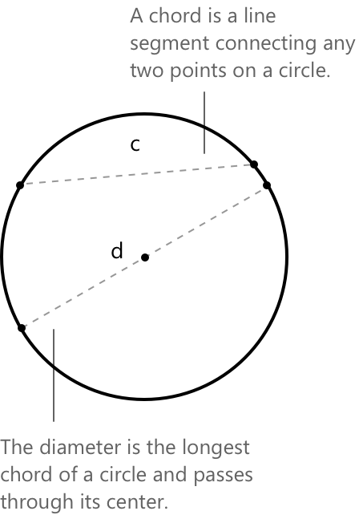
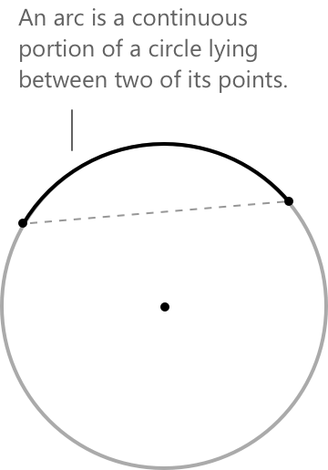
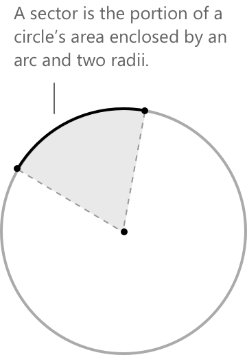
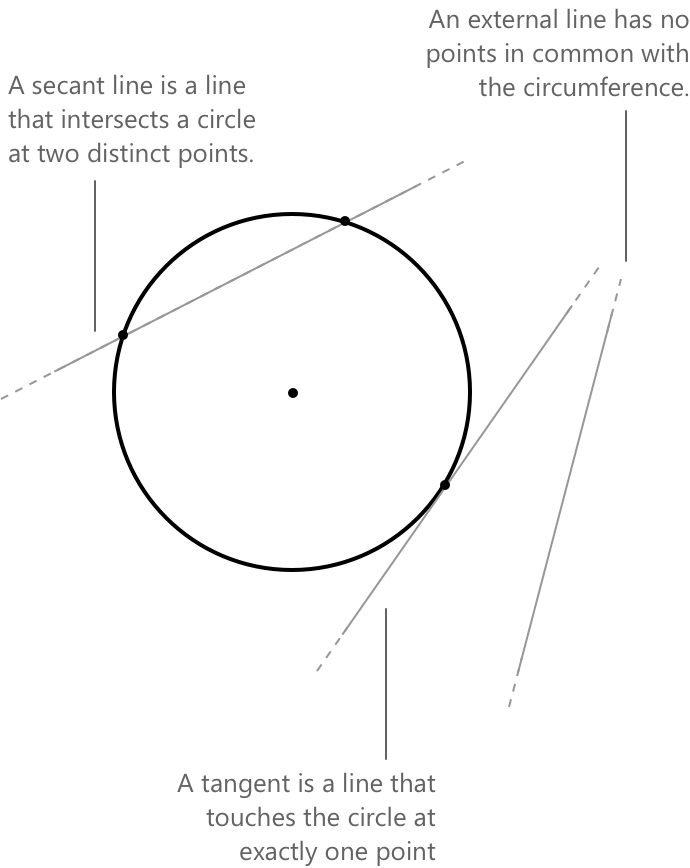

Коло
Вступ до конічних перетинів
При вивченні параболи ми побачили, що коли площина перетинає конус, resulting shape, при проекції на площину, може бути окружністю, параболою, еліпсом або гіперболою. Ці криві разом називають коніками. Більш формально, коніка — це алгебраїчна крива другого степеня на площині. Вона визначається як множина точок \( (x, y) \in \mathbb{R}^2 \), що задовольняють загальне квадратне рівняння зі змінними \( x \) та \( y \):
\[ f(x, y) = a_{11}x^2 + 2a_{12}xy + a_{22}y^2 + 2a_{13}x + 2a_{23}y + a_{33} = 0 \]
Тут коефіцієнти \( a_{ij} \in \mathbb{R} \), і щоб крива дійсно була квадратною, ми вимагаємо, щоб і \( a_{11} \), і \( a_{22} \) були ненульовими.
Що таке окружність
Дано точку \( C \) на площині, яку називають центром; окружність визначається як множина всіх точок на площині, які рівновіддалені від \( C \). Розглянемо окружність \( \Gamma \) з центром \( C \) та радіусом \( r \). Для кожної точки \( P \) на окружності виконується наступний зв'язок:
\[ \overline{PC} = r, \quad \text{де } r \in \mathbb{R}^{+} \setminus {0} \]

Використовуючи формулу відстані між двома точками на площині, ми знайдемо, що радіус задається як:
\[ \sqrt{(x - x_0)^2 + (y - y_0)^2} = r \]
Підносячи обидві частини рівняння до квадрата, ми отримаємо стандартну форму рівняння окружності.
\[ (x - x_0)^2 + (y - y_0)^2 = r^2 \]
Розкриваючи квадрати двох двочленів, отримаємо:
\[ x^2 - 2x x_0 + x_0^2 + y^2 - 2y y_0 + y_0^2 = r^2 \]
Перенесемо всі доданки в ліву частину та замінимо вирази наступними значеннями:
\[ \begin{aligned} a &= -2x_0 \\[0.5em] b &= -2y_0 \\[0.5em] c &= x_0^2 + y_0^2 – r^2 \end{aligned} \]
Те, що ми отримали, відоме як канонічна або стандартна форма рівняння окружності.
\[ x^2 + y^2 + ax + by + c = 0 \]
Поширені запитання про окружність
-
Чи є коло тим самим, що й окружність?
Ні, вони не є одним і тим самим. Окружність — це периметр або зовнішня межа кола, тоді як коло включає всі точки всередині цієї межі. Іншими словами, коло — це поверхня; окружність — це крива. -
Як обчислити довжину окружності кола?
Довжина окружності обчислюється за формулою \( C = 2\pi r \), де \( r \) — радіус кола. -
Як обчислити площу кола?
Площа кола задається формулою \( A = \pi r^2 \), де \( r \) — радіус. Було б неправильно говорити про «площу окружності», оскільки окружність — це лінія, а не поверхня.
Радіус, хорда, діаметр і коло

- Радіус — це будь-який відрізок прямої, що з'єднує центр окружності з точкою на самій окружності.
- Хорда визначається як будь-який відрізок, кінці якого лежать на окружності.
- Діаметр — це будь-яка хорда, що проходить через центр окружності; отже, це найдовша можлива хорда. Його довжина рівно вдвічі більша за радіус.
- Коло — це множина, що містить усі точки на окружності, а також усі точки всередині неї.
Довжину \( c \) хорди в колі можна обчислити за допомогою наступної формули, яка містить функцію синуса:
\[ c = 2r \cdot \sin\left(\frac{\theta}{2}\right) \]
- \( r \) — радіус кола.
- \( \theta \) — центральний кут, що опирається на хорду, виміряний у радіанах.
Дуги та кругові сектори

Дуга — це частина кола, обмежена двома його точками. Кінці хорди поділяють коло на дві дуги. Кажуть, що хорда опирається на дві дуги, або, що еквівалентно, кожна дуга опирається на хорду. Довжина дуги кола задається формулою:
\[ \text{Довжина дуги} = r \cdot \theta \]
- \( \theta \) — центральний кут у радіанах.
- \( r \) — радіус кола.
Круговий сектор — це частина круга, обмежена дугою та двома радіусами, що з'єднують центр із кінцями дуги. Площа \(A\) кругового сектора задається формулою:
\[ \text{A} = \frac{1}{2} r^2 \theta \]

Дуги представляють вимірювані частини кола і безпосередньо пов'язані з центральними кутами. Сектори, визначені дугою та двома радіусами, дозволяють обчислювати площі та пов'язувати кутові міри з лінійними відстанями. Ці поняття є важливими для виведення формул довжини дуги та розв'язання задач з тригонометрії.
Приклад 1
Якщо коло має центр у початку координат і радіус \( r = 1 \), його рівняння набуває вигляду:
\[ x^2 + y^2 = 1 \]
Це відповідає загальному вигляду:
\[ x^2 + y^2 + ax + by + c = 0 \]
де:
\[ a = 0, \quad b = 0, \quad c = -1 \]
Отже, рівняння набуває вигляду:
\[ x^2 + y^2 - 1 = 0 \]
Зазвичай, якщо коефіцієнти при членах другого ступеня не дорівнюють 1, все рівняння ділять на відповідну сталу \(k\), щоб нормалізувати їх до 1. Це полегшує розпізнавання рівняння як рівняння кола та його пряме порівняння зі стандартним виглядом.
Кола та прямі
Пряма може бути класифікована як січна, дотична або зовнішня щодо кола залежно від її відстані до центру.

-
Січні прямі: пряма перетинає коло у двох різних точках. Це відбувається, коли відстань від центру до прямої менша за радіус \(D < r\).
-
Дотичні прямі: пряма торкається кола рівно в одній точці. Це стається, коли відстань від центру дорівнює радіусу \(D = r\)
-
Зовнішні прямі: пряма взагалі не перетинає коло. У цьому випадку відстань від центру більша за радіус \(D > r\).
Координати точок перетину є розв'язками системи, утвореної рівняннями двох кривих:
\[ \begin{cases} x^2 + y^2 + ax + by + c = 0 \\[0.5em] y = mx + q \end{cases} \]
-
Пряма перетинає коло у двох різних точках (є січною), коли система має два дійсні та різні розв'язання. Ця ситуація виникає, коли дискримінант отриманого квадратного рівняння більший за нуль.
-
Пряма торкається кола рівно в одній точці (є дотичною), коли система має один дійсний розв'язок (кратний). Це відповідає випадку, коли дискримінант дорівнює точно нулю.
-
Пряма взагалі не перетинає коло (є зовнішньою), коли система не має дійсних розв'язків. Це стається, коли дискримінант квадратного рівняння менший за нуль.
Приклад 2
Розглянемо коло з рівнянням \(x^2 + y^2 - 2x - 2y - 3 = 0\) та дослідимо його взаємозв'язок із прямою \(y = -x + 3\). Наша мета — визначити, чи є ця пряма січною, дотичною або зовнішньою щодо кола.
Спочатку складемо систему рівнянь для кола та прямої:
\[ \begin{cases} x^2 + y^2 – 2x – 2y – 3 = 0 \\[0.5em] y = -x + 3 \end{cases} \]
Щоб спростити обчислення, перепишемо перше рівняння за допомогою методу доповнення до повного квадрата, і отримаємо:
\[ (x - 1)^2 - 1 + (y - 1)^2 - 1 - 3 = 0 \]
Метод доповнення до повного квадрата — це техніка, що використовується для переписування квадратного виразу в більш структуровану та зручну форму, що полегшує його аналіз та розв'язання. Метою є перетворення квадратного полінома або рівняння в еквівалентну форму, де ліва частина є повним квадратом тричлена, а права частина — сталою.
Система набуває вигляду:
\[ \begin{cases} (x – 1)^2 +(y – 1)^2 = 5\\[0.5em] y = -x + 3 \end{cases} \]
Підставимо вираз для \( y \) з другого рівняння в перше. Отримуємо:
\[ (x - 1)^2 + (-x + 2)^2 = 5 \]
Тепер розкриємо обидва квадрати:
\[ x^2 - 2x + 1 + x^2 - 4x + 4 = 5 \]
Згрупувавши подібні доданки, отримаємо:
\[ 2x(x - 3) = 0 \]
Це рівняння є квадратним рівнянням і має два розв'язання:
\[ x = 0 \quad \text{або} \quad x = 3 \]
Щоб знайти відповідні значення \( y \), скористаємося рівнянням \( y = -x + 3 \).
Якщо \( x = 0 \), то \( y = 3 \).
якщо \( x = 3 \), то \( y = 0 \).
Отже, точками перетину є:
\[ P_1 = (0,\ 3) \quad \text{та} \quad P_2 = (3,\ 0) \]
Оскільки існують два різних розв'язання, пряма є січною до кола.